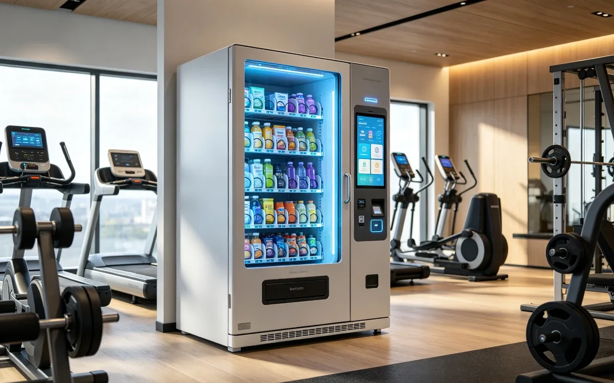

AI Vending for Gyms

The scenario
Gyms sell memberships, but most of them leave money on the table every night. Front desks close, and with them goes the sale of hydration, snacks, and supplements to members who train late. At the same time, the retail that does exist in gyms is often poorly matched — a handful of protein shakes at the front desk, or nothing at all. AI vending puts a small, always-open nutrition shop right where members work out, and it captures the purchases that happen before, during, and after a session.
The opportunity is structural, not seasonal. Fitness members visit multiple times a week, have goal-oriented buying habits, and are notably willing to pay a premium for convenience that fits their routine. A unit near the training floor serves the same member again and again, which makes gym retail far more predictable than most other venue types.
Who you are serving
- Members. A mix of casual gym-goers and serious lifters. Serious members buy with intent — pre-workout before a session, protein after — and are largely price-insensitive for products that support their goals.
- Late-night and early-morning athletes. The 9 PM–1 AM crowd and the 5 AM crowd arrive outside staffed hours. They are the most underserved and the most valuable.
- Personal trainers and coaches. They recommend products to clients. A unit they trust becomes an extension of their coaching.
- Staff. Trainers and front-desk workers buy throughout the day, adding baseline volume.
The pain points are simple: forgetting water or gear, needing fuel before a session, and recovering after one. Each maps cleanly to a product category.
Why AI vending fits
- Members visit multiple times a week, creating reliable repeat traffic that most venues cannot match.
- Pre- and post-workout demand is urgent and time-bound — exactly what an unattended unit serves best.
- Late-night training happens after staffed retail closes, so the unit captures revenue the gym currently loses entirely.
- Gyms are compact, so one well-placed unit can cover the training floor, the entrance, and the locker area.
- Enclosed smart cabinets handle irregular products — shaker cups, towels, awkward supplement tubs — that jam traditional coil machines.
Peak buying windows
| Window | What members buy | Why it happens |
|---|---|---|
| Pre-workout (arrival) | Energy drinks, pre-workout formulas, water | Fuel for the session ahead, bought at the door. |
| Intra-workout | Electrolyte drinks, water | Heavy sweating drives hydration demand mid-session. |
| Post-workout (the golden window) | Protein shakes, recovery drinks, high-protein snacks | The 30 minutes after training is the highest-margin moment in the gym. |
| Forgot-it moments | Hair ties, towels, lifting straps, earbuds | At any point in the visit — urgent and price-insensitive. |
Where to place the unit
| Location | Why it works | Best stocked with |
|---|---|---|
| Near the entrance or front desk | Maximum visibility and the natural spot for pre-workout purchases. | Energy drinks, water, pre-workout. |
| Exit path from the training floor | Catches the post-workout protein purchase on the way out. | Protein shakes, recovery drinks, bars. |
| By the locker rooms | High traffic at the start and end of sessions. | Towels, toiletries, forgotten gear, hydration. |
| By group-class studios | Classes end together, creating a surge of buyers who all need hydration at once. | Water, electrolyte drinks, quick snacks. |
How to choose products for this venue
Gym members are goal-driven buyers. The mix should feel like a nutrition shop, not a snack machine, and it should be organized around the workout journey:
| Layer | Role in the unit | Example items | Margin profile |
|---|---|---|---|
| Hydration & energy | Traffic driver. Baseline thirst is the daily habit; price it fairly so members return. | Purified water, electrolyte drinks, clean energy drinks. | Low to mid, high frequency. |
| Protein & recovery | Profit driver. Post-workout recovery is a premium, goal-driven purchase. | Ready-to-drink protein shakes, protein bars, recovery drinks, single-serve pre-workout packs. | Premium; the revenue engine. |
| Fitness essentials | Margin driver + loyalty builder. Resolves the "I forgot my gear" moment. | Microfiber towels, hair ties, lifting straps, wrist wraps, shaker cups, resistance bands. | Highest in the unit. |
Feature brands members already trust — household names in protein and sports nutrition outsell unknowns in gyms by a wide margin. Keep a small "forgot it" section near the top and rotate seasonal items: cooling towels in summer, hand warmers for outdoor runners in winter.
How to arrange the shelves
Because members can see and touch products through an open-door format, visual placement directly drives behavior:
| Shelf zone | What goes there | Why |
|---|---|---|
| Top shelves | Towels, hair ties, straps, small gear | Visible on open, they remind members of what they forgot. |
| Middle shelves (eye level) | Protein shakes, recovery drinks, premium bars | The easiest reach zone holds the highest-margin items. |
| Bottom shelves | Large water bottles, multi-pack electrolytes | Heavy items members will bend for. |
Group bright, high-energy supplement packaging tightly in the center rows to create a visual focal point, and place premium protein bars directly beside electrolyte drinks to nudge the classic two-item grab: a drink plus a snack.
Running the unit well
- Restock around peak class and training hours: mornings before the early crowd, late afternoon before the post-work surge, and again before the night-owl window.
- Payments: contactless cards and mobile wallets are essential. Members should not need an app or a front-desk interaction.
- Loss prevention: automatic item detection keeps shrinkage near zero in an environment where open shelves tempt casual theft.
- Membership tie-ins: if the gym runs promotions, they can be delivered as credits through the operator’s platform — for example, a store credit added to a member’s account after they buy a training package — without adding checkout friction.
- Data loop: track which products sell in the pre-workout window versus post-workout, and stock each zone accordingly.
Recommended machine configuration
A standard spec sheet covers most gyms locations. Confirm the details with your vendor, but this is a sensible starting point:
| Configuration | Recommended |
|---|---|
| Form factor | Chilled smart cooler |
| Capacity | Chilled shelves for protein bars, shakes, drinks |
| Payments | NFC, QR, mobile wallets |
| Connectivity | 4G/5G |
| Venue specifics | Temperature logging for perishables, compact size for locker rooms |
What success looks like
A gym unit earns on repeat frequency: the same members buying small baskets several times a week. Track the metrics that matter:
| Metric | What it signals |
|---|---|
| Repeat purchase rate | The core health metric. High repeat rate means the unit has become part of the routine. |
| Transactions per day | Class schedules drive predictable surges. |
| Items per transaction | A drink-plus-snack pairing is the goal. |
| Post-workout share | How much revenue lands in the recovery window — usually the highest-margin slice. |
| Stockout rate on core items | Running out of protein shakes at 8 PM is a direct revenue loss. |
Common mistakes to avoid
- Stocking it like a convenience store. Chips and candy underperform a nutrition-led mix in a gym; members buy goals, not cravings.
- Pricing protein too low. Members expect premium pricing on recovery products — undercutting leaves margin on the table.
- Putting the unit where exit flow misses it. A unit at the back of the gym captures pre-workout but loses the post-workout moment.
- Forgetting the night crowd. If members train at 10 PM, the unit must be stocked for them, not just for the 6 PM rush.
- Neglecting the "forgot it" section. Those small essentials build loyalty out of proportion to their sales.
Frequently asked questions
What sells best in a gym?
Water and electrolyte drinks drive daily traffic; protein shakes, recovery drinks, and protein bars drive the highest margins in the post-workout window.
Is gym retail worth it when members can buy supplements online?
Yes, because the purchase is impulse-driven and time-bound — members need protein in the 30 minutes after a session, not in two days of shipping.
How do I handle late-night training without staff?
The unit runs unattended 24/7. Stock it for the night window and let automatic item detection handle billing and loss prevention.
Can the unit tie into memberships or promotions?
Yes. Credits can be added to member accounts through the operator’s platform — for example, as a reward for buying a training package — so members just tap and the credit applies.
What about products that do not fit standard vending slots?
Open-door smart cabinets handle irregular items like shaker cups, towels, and supplement tubs that jam traditional coil machines.